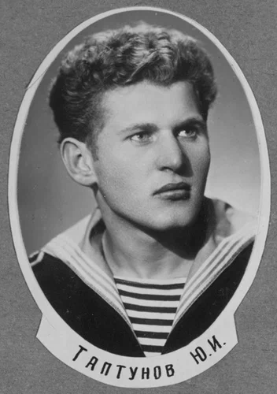
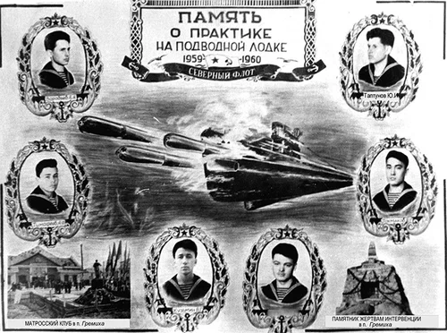
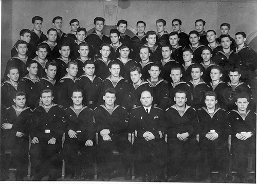
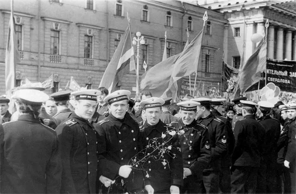

В этом году мы могли бы отметить юбилей моего друга Юры Таптунова.

Мы его звали Проф. Невысокого роста, сутуловатый и слегка мешковатый, он нам напоминал чудака-профессора, которых в то время много было среди наших учителей. И рассуждения у него были как у ученого. И задачи он ставил перед собой подстать гению-самоучке: пытался, например, доказать Великую теорему Ферма и раза два, как ему казалось, добивался успеха на этом пути. К математике вообще он питал слабость. Курс нам читал Николай Петрович Сергеев. Читал оригинально и строго. Мог остановиться на запятой, когда звучал звонок на перерыв, а потом через несколько дней продолжить чтение именно с этой запятой. При этом никаких заметок у него я никогда не видел. Просматривая много лет спустя конспекты его лекций, когда мог уже сравнить их с капитальными курсами высшей математики, понял их глубину и оригинальность. Тогда этот курс, правда, не включал теорию матриц, которую сейчас изучают по-моему даже юристы, а определители излагались лишь в свете их приложения к решению систем линейных уравнений. Проф же заинтересовался ими всерьез и мы выпросили у Сергеева книги по этой теме. Николай Петрович дал их с условием, что мы выступим по изложению теории матриц на семинаре Научного общества. И уже через три месяца у кафедры математики появилось объявление, что курсант Таптунов выступит с изложением основ этой теории.
Как многие в то время, он грезил дальними походами и путешествиями. Когда после третьего курса мы решили спуститься по Днепру на лодке, он был одним из трех участников этого похода, благо конечной целью был объявлен его родной Кременчуг. Начинали мы переход из белорусского Жлобина, где жили родственники одного из наших друзей. Добыли лодку-плоскодонку, сами сделали весла, вместо палатки был кусок брезента, из всего снаряжения – лишь лыжные костюмы. Переход был тяжелым. Частые дожди, от которых никуда не спрятаться, встречный ветер, отсутствие сменной одежды и обуви измотали нас вконец. Иногда, чтобы отдохнуть, цеплялись за проходящие баржи, но их шкиперы рано или поздно обнаруживали постороннюю посудину на буксире и гнали нас прочь. Юра тогда сказал фразу, которую мы не раз потом вспоминали: «Всё, хватить морячить, перехожу в пехоту».
Все шесть с половиной лет учебы мы были вместе. Вместе попали на лодку С-276. Таптунова можно видеть на фотографиях экипажа, которые я помещал в журнале выше, а также вот на этом кустарно изготовленном нами монтаже после завершения службы на «эске».

На следующей фотографии – наша учебная рота (два класса) на 1 курсе. В центре – Юрий Константинович Водолазко. Я о нем у же писал. Юра – в третьем ряду второй слева.

Вместе участвовали в парадах на Дворцовой и Красной площадях, стояли в оцеплении в дни праздников. Вот фотография из того времени. Идет колонна завода им. ОГПУ. Мы, прикидываясь, просим расшифровать зто мудреное название. Нам встречный вопрос: «А как расшифровать? Слева или справа?» – «?..» – «Если слева, то «О, господи, помоги убежать», а если наоборот «Убежишь, поймают, голову оторвут». Общий смех, хорошее настроение, тем более сразу же после оцепления нас увольняют в праздничный город.

Вместе писали диплом. Тему выбрали нестандартную «Проектирование ядерной энергетической установки ПЛ с кипящим реактором». «Прототипа» для нее не было, пришлось все считать самим. Уже после защиты к нам подходили адъюнкты, просили дать методику расчетов для использования в своих диссертациях.
Потом началась служба на подводных лодках. Здесь пути наши разошлись. Юра снова попал в Гремиху, где через 10 лет стал командиром БЧ-5 крейсерской атомной подводной лодки с баллистическими ракетами К-171 (проект 667 б).
О том, что произошло дальше – краткая справка, без лирики, как это отражалось в служебных документах. (Информация с сайта http://www.deepstorm.ru/)
«1976 год январь-апрель
Группа подводных лодок в составе КрПЛ К-171 под командованием кап.1р. Ломова Э.Д. и КрПЛ К-469 (проект 671, командир - кап.2р. Урезченко B.C., старший на борту- кап.1р. Соколов В. Е.) под общим командованием контр-адмирала Коробова В.К. совершила межфлотский переход (21754 мили) с Северного на Тихоокеанский флот южным морским путём через три океана. В Атлантическом океане ПЛ шли в подводном положении на удалении 18 кбт. друг от друга. После пересечен экватора ПЛ разошлись и далее следовали на Камчатку самостоятельно. За успешное выполнение задания командования и проявленные при этом мужество и отвагу Указом Президиума Верховного Совета СССР от 25.05.1976 года кап.1р. Ломову Э.Д. и командиру БЧ-5 инженер-кап.3 р. Таптунову Ю.И. присвоены звания Героя Советского Союза с вручением ордена Ленина и медали "Золотая Звезда".»
Мне не пришлось поздравить своего друга лично. Я в это время был далеко. Отмечал он звание с товарищами как положено, окунули звезду в стаканы, выпили, попробовали медаль «на зуб» - золото ли? – и единогласно подтвердили: золото.
Достаточно подробных описаний этого перехода нет, есть лишь некоторые свидетельства. Вот как описывает один из моментов похода командир ПЛ К-171 кап.1р. Э.Ломов (http://www.navy.ru/):
«...Это произошло, когда мы подходили к проливу Дрейка. Мне докладывают, что в девятом отсеке на неотключаемом участке трубопровода забортной воды образовался «свищ». Такие вещи для подводников, в общем-то, естественны, поскольку возникают из-за внутренней коррозии металла, обусловленной высокой агрессивностью морской воды. Ситуация привычная, но она характерна тем, что каждая минута промедления чревата большими неприятностями, если не сказать круче.
Забортная вода вначале пробивалась тонкой, еле заметной струйкой, а потом образовался «ручеёк» аж в два пальца. Что и говорить, тревожный звоночек.
Нужно срочно принимать решение. Предлагалось несколько вариантов заделки свища. Не было бы никаких проблем, выйди мы в надводное положение. Но тогда свелась бы к нулю скрытность перехода. Наше местонахождение вероятный противник обнаружил бы без особого труда, что, мягко говоря, напрочь перечеркивало все наши усилия по скрытности.
Решили заделывать «свищ» на глубине 40-50 метров, снизив скорость субмарины до 6-8 узлов. Контр-адмирал Коробов вместе со мной и командиром БЧ-5, капитаном 3-го ранга инженером Юрием Таптуновым спустился в турбинный отсек. Здесь же находились все трюмные специалисты.
Быстро оценили обстановку. А дальше, как положено в подобных случаях, сравняли давление в отсеке с давлением забортным. Человеку в таких условиях приходится, прямо скажу, тяжко. Устраняли неисправность в ускоренном темпе. Заделали «свищ»!
Контр-адмирал Коробов не покидал аварийный участок до тех пор, пока не была полностью ликвидирована опасность затопления отсека.
Замечу, что в подобных случаях тоненькая струйка забортной воды может быстро превратиться в фонтан, которому противостоять практически невозможно, и жизненно важный отсек может оказаться затопленным с вытекающими отсюда последствиями.»
А полтора года спустя произошла трагедия. Конечно, по родному нашему обычаю, все списали на покойников. Информация с http://www.deepstorm.ru/:
«1978 год 28 декабря
Крейсер возвращался после стрельб на базу в надводном положении. Работал один реактор, на втором проводились профилактические работы, в ходе которых из-за неправильных действий личного состава была переопрессована подпиточная емкость. Несколько тонн воды вылилось на крышку реактора. Командир БЧ-5 Герой Советского Союза кап.2р. Таптунов Ю.И., желая скрыть аварию, не доложил о случившемся командиру крейсера и приказал вывести реактор на мощность, чтобы выпарить воду и провентилировать помещение. В какой-то момент командиру БЧ-5 показалось что испарениe идет слишком медленно. Чтобы лично оценить обстановку, он и еще два офицера зашли в помещение реактора и задраились там. Из-за роста температуры и давления открыть люк они не смогли. Когда прибывшие на помощь моряки открыли люк, все трое уже погибли.»
Я не стал править ни фактические ошибки, ни оценки, данные в этом документе. Текст этот растиражирован и правкой одного экземпляра ничего не изменишь. Я знал Юру Таптунова. И уверен, что такое ответственное дело, как запуск реактора, он бы без разрешения командира не начал. Скорее всего здесь налицо было стремление командования скрыть происшествие (поступление воды в реакторную выгородку), поэтому были предприняты действия, которые, если честно говорить, не раз проводились на других подводных лодках в сходных ситуациях. И я точно уверен, что в такой ситуации Таптунов не мог не участвовать в работах лично. Такой уж он был человек. Вечная ему память.